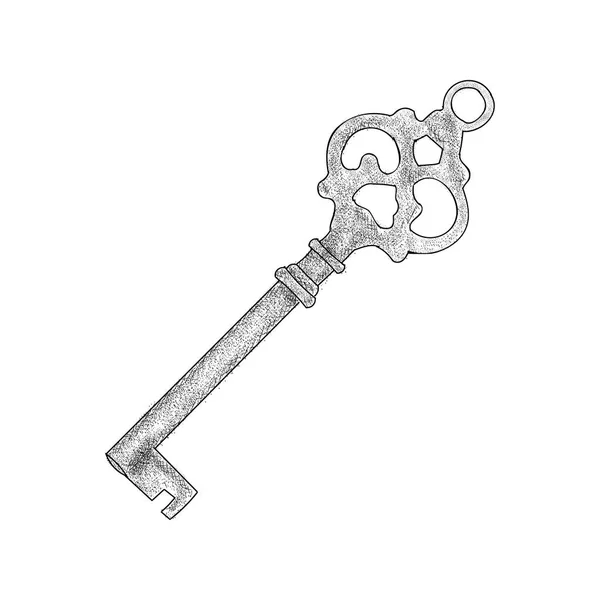

Aquel que entra donde quiere
["A quien busca entrar a cualquier costo, a quien busca poder sin importar el costo. Ellos son a quienes llamo a liberarme."]
["Busca una casa antigua que aun posea una puerta con cerradura, inserta cualquier llave compatible con esta, cierra los ojos y di lo siguiente: "Deseo encontrar al que entra donde quiere"
tras volver a abrir los ojos la puerta cambiara a un diseño victoriano, entra y te encontraras con la recepcion de una pequeña mansion de la epoca victoriana.
En el centro estara un mayordomo que te dara la bienvenida y te preguntara que asunto tienes con su señor, solo contesta: "Deseo saber como se encuentra de salud"
Cualquier otra cosa solo hara que el mayordomo te pida salir y en caso de no hacer caso el mismo te sacara por donde entraste, tras escuchar tu peticion te pedira que lo sigas a los aposentos
de su señor, pase lo que pase no lo pierdas de visto o te perderas en los pasillo de la mansion. Si en algun momento lo pierdes de vista no te muevas y espera a que el vuelva a tu posicion,
usualmente te dira que tuvo que atender algo mas; una vez lleguen a la habitacion el te indicara que puerta abrir, entra en silencio y espera a que una voz te pregunte: "A que has venido?"
Solo responde: "Quiero entrar a un lugar" si no escuchas ruido tendras que corre devuelta a la recepcion y salir por la puerta de entrada antes de que sea tarde, en caso de que escuches una respiracion
agitada tendras que acercarte a la cama en donde un ser deforme te espera sin posibilidad de moverse, acerca tu mano a el y espera a que te de un objeto viscoso.
No lo veas y dirigete a la salida pues la mansion ya no es peligrosa y puedes volver sin problemas, al salir el objeto viscoso que recibiste, esto tomara la forma y
textura de una llave antigua, esa llave es el perdido 010 y puede tomar la forma de cualquier llave que necesites.
Encontraste la forma de entrar, ahora dime para que lo usaras?"]